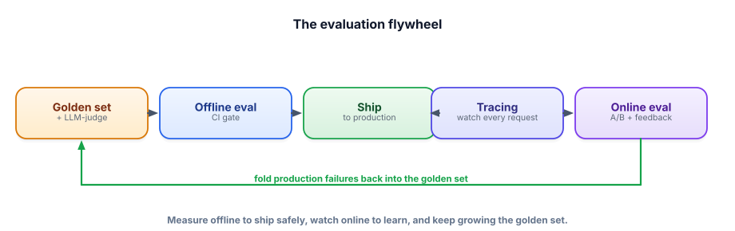

Capstone: a prompt/RAG eval harness
This is the project that signals “senior” louder than any other, because almost no one builds it: a reusable harness that scores any prompt or RAG system against a golden set, judges fuzzy quality with an LLM, and gates changes so regressions can’t ship. It’s the measurement discipline of Track 6 turned into a tool — free and runnable.
What you’re building
A small framework you can point at any LLM system (a prompt, the RAG bot from 14.1, the agent from 14.2) that: loads a golden set, runs the system on each case, scores with both exact/keyword checks and an LLM-as-judge, reports per-category results, and fails if quality regresses vs. a baseline. This is the “evaluation included” box graders look for (Track 15.5), made reusable.

$ pip install ollama
$ ollama pull llama3.2 # used both as the judge and (optionally) the system under testStep 1 — The golden set (data is the product)
{"q": "What is the refund window?", "expected": "30 days from delivery", "category": "billing"}
{"q": "How do I reset my password?", "expected": "Settings > Security", "category": "technical"}
{"q": "Ship to the Moon?", "expected": "I don't know / not supported", "category": "edge"}
# ... 20-50 real cases, covering every category + edge/abstain/safety cases ...Step 2 — The harness (keyword + LLM-judge + per-category)
import json, ollama
from collections import defaultdict
def judge(question, expected, answer):
"""LLM-as-judge: is the answer correct vs the expected answer? Returns 1-5."""
p = f"""Score the ANSWER 1-5 for correctness vs the EXPECTED answer. Ignore wording/length.
Return JSON: {{"score": <1-5>}}.
QUESTION: {question}
EXPECTED: {expected}
ANSWER: {answer}"""
out = ollama.chat(model="llama3.2", messages=[{"role":"user","content":p}],
format="json", options={"temperature": 0})["message"]["content"]
try: return int(json.loads(out)["score"])
except: return 1
def evaluate(system_fn, path="golden.jsonl"):
rows = [json.loads(l) for l in open(path)]
by_cat = defaultdict(lambda: {"n": 0, "score": 0})
per_case = {}
for r in rows:
ans = system_fn(r["q"])
s = judge(r["q"], r["expected"], ans) # fuzzy quality (1-5)
by_cat[r["category"]]["n"] += 1
by_cat[r["category"]]["score"] += s
per_case[r["q"]] = s
overall = sum(c["score"] for c in by_cat.values()) / sum(c["n"] for c in by_cat.values())
return {"overall": overall, "by_category":
{k: v["score"]/v["n"] for k, v in by_cat.items()}, "per_case": per_case}Step 3 — The regression gate (CI for prompts)
import json, sys
from harness import evaluate
from my_system import answer # the prompt/RAG system you're changing
result = evaluate(answer)
baseline = json.load(open("baseline.json")) # committed scores from the last good version
print("overall:", round(result["overall"], 2), "vs baseline", baseline["overall"])
regressed = [c for c, v in result["by_category"].items()
if v < baseline["by_category"].get(c, 0) - 0.3] # tolerance for noise
if regressed:
print("❌ BLOCKED — regressed:", regressed)
sys.exit(1) # fail the build (run this in CI)
print("✅ OK — no regressions")- It’s the rarest thing in any portfolio — proof you measure quality systematically, not by vibes.
- It’s reusable: point it at the RAG bot (14.1), the agent (14.2), or any prompt — one harness, many systems.
- It demonstrates LLM-as-judge, per-category scoring, and a CI gate (Track 6.3–6.6) in working code.
- It’s genuinely useful — you’ll use it on your other capstones, which is a great story.
- Free and local: the judge is the same Ollama model.
1. Add retrieval metrics (recall@k/MRR) when evaluating a RAG system, separate from answer quality (Track 3.8) — so you know which half failed.
2. Validate the judge (Track 6.3): hand-score 10 cases and check the LLM-judge correlates with you.
3. Add pairwise comparison (“is version A or B better?”) for head-to-head prompt comparisons.
4. Wire gate.py into a GitHub Action so every PR runs the eval automatically.
▸ The interview narrative
“I built a reusable eval harness because measurement is what makes LLM systems shippable. It loads a golden set with categories and edge cases, scores each answer with an LLM-as-judge (validated against my own labels), reports per-category quality, and gates changes in CI — a regression on any critical category fails the build. I use it on all my projects, so I can adopt a new model or refactor a prompt and instantly know if quality moved.” This single project proves the entire Track 6 skillset and the “evaluation is the moat” thesis — the clearest senior signal you can give.
Why does the regression gate compare per-category scores rather than only the overall average?
You can measure anything. Next, change a model’s behavior itself. Next capstone: a fine-tuned domain model.